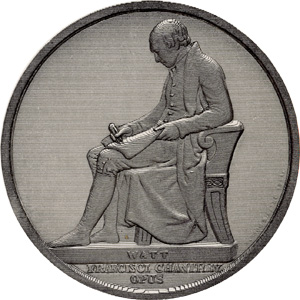

|
|
Home | Corson
Collection | Biography | Works | Image
Collection | Recent
Publications | Correspondence | Forthcoming
Events | Links | E-texts | Contact
Sir Francis Leggatt Chantrey (1781-1841)
 The sculptor Sir Francis Leggatt
Chantrey was born at Norton, Derbyshire, on 7 April
1781.
The
son of
a
tenant farmer
and carpenter, he received a rudimentary education at the village
school. Initially apprenticed to a carver in nearby Sheffield,
he broke his indentures in
1802 to pursue a career as a portrait painter. With encouragement
from the mezzotintist J. R. Smith, he spent the next five years
moving between Sheffield and London, working as a largely self-taught
portraitist and modeller
of busts. He was awarded his first public commission
in 1805, carving a bust of the Revd James Wilkinson, vicar of
Sheffield. This, his first work in marble, won him immediate local
fame. Seeking
perhaps to hone his skills, Chantrey attended the Royal Academy
Schools in 1807 but never registered as a student. At around this
point, Chantrey abandoned painting entirely in order to concentrate
on sculpture. His sole exhibit at the academy in 1808, a bust of Satan,
resulted in a commission to carve plaster busts of four naval heroes,
admirals
Duncan, Howe,
Nelson, and St Vincent, for Alexander Daniel's additions to the
Queen's House. Gradually Chantrey's fame spread in London. In 1809
he was commissioned to carve a bust of George III, for which the
king gave sittings, and in 1810 he exhibited at the Royal Academy
his first bust of a national leader, William Pitt. The sculptor Sir Francis Leggatt
Chantrey was born at Norton, Derbyshire, on 7 April
1781.
The
son of
a
tenant farmer
and carpenter, he received a rudimentary education at the village
school. Initially apprenticed to a carver in nearby Sheffield,
he broke his indentures in
1802 to pursue a career as a portrait painter. With encouragement
from the mezzotintist J. R. Smith, he spent the next five years
moving between Sheffield and London, working as a largely self-taught
portraitist and modeller
of busts. He was awarded his first public commission
in 1805, carving a bust of the Revd James Wilkinson, vicar of
Sheffield. This, his first work in marble, won him immediate local
fame. Seeking
perhaps to hone his skills, Chantrey attended the Royal Academy
Schools in 1807 but never registered as a student. At around this
point, Chantrey abandoned painting entirely in order to concentrate
on sculpture. His sole exhibit at the academy in 1808, a bust of Satan,
resulted in a commission to carve plaster busts of four naval heroes,
admirals
Duncan, Howe,
Nelson, and St Vincent, for Alexander Daniel's additions to the
Queen's House. Gradually Chantrey's fame spread in London. In 1809
he was commissioned to carve a bust of George III, for which the
king gave sittings, and in 1810 he exhibited at the Royal Academy
his first bust of a national leader, William Pitt.
| The year 1811 saw Chantrey gain widespread recognition. In
April, the City of London awarded him the commission for a
statue of George III for the Guildhall. Six plaster
busts in a new, realistic style, exhibited at the Royal Academy,
including Benjamin West, John Raphael Smith, John
Horne Tooke, and Sir Francis Burdett, were a
triumph. In the following years, Chantrey was much sought-after
as a portrait sculptor, prized for his ability to capture the
intimate character of his subjects and yet to portray them
as men of the age in which they lived. His sitters included
artists, writers, medical men, military heroes, scientists,
and industrialists. Particularly outstanding works of this
period include busts of James Watt (1815) and Sir
Walter Scott (1820), and statues of Major-General
Hoghton (1812), The Robinson Children (1815),
and, for Parliament House, Edinburgh, Lord President Robert
Blair (1812) and Robert Dundas of Arniston (1820).
Sir Walter Scott judged the latter 'as like the original subjects
as marble can do to flesh & blood' (to Charles William
Henry Scott, 4th Duke of Buccleuch, 14 November 1818, Letters,
V, 217). |
|
|
Click on the thumbnail to see
an engraving of Chantrey's bust of James Watt.
|
|
|
Chantrey
visited Italy in 1819, perhaps in response to pressure from patrons
to attempt ideal, poetic figures, but he continued
to specialize in contemporary portraiture. From the early 1820s
until his death, Chantrey was the portrait sculptor of choice
for wealthy, institutional, or public patrons. His masterpieces
of
these years include busts of George IV (1822), Robert
Southey (1828), Sir Jeffry Wyatville (1837), and Queen
Victoria (1838),
and statues of James
Watt (1820) and Revd Reginald Heber (1828). He
was knighted by William IV in 1835 and his popularity remained
undimmed
until his sudden death in London on 25 November
1841.
He bequeathed
a legacy to the Royal Academy to support the purchase of British
paintings and sculpture and to create a national collection of
British art. A victim of the low esteem in which portrait sculpture
has
traditionally been held, Chantrey long suffered from critical
neglect. He is now, however, increasingly recognized outstanding
British
sculptor of the early nineteenth century and as the creator of
lasting images
of
some
of the most
important
figures
in British
history.

|
Medal
of Chantrey's statue of James Watt by William Wyon,
engraved by C. Chabot.
From: James Patrick Muirhead,
The Life of James Watt (London: Murray, 1858)
|
|
Chantrey is responsible for three likenesses of Scott, the celebrated
1820 bust, a preliminary pencil
sketch, and a statuette modelled
as a tentative proposal for Edinburgh's Scott
Monument (now at the Lady
Lever Art Gallery).
Bibliography
- Caw, James L. The Scott Gallery:
A Series of One Hundred and Forty-Six Photogravures, Together
with Descriptive Letterpress (Edinburgh; London: T.
C. & E. C.
Jack, 1903)
- Graves, Algernon. A Dictionary
of Artists Who Have Exhibited Works in the Principal London
Exhibitions from 1760 to 1893, 3rd edn (London: H. Graves
and Co., 1901)
- Russell, Francis. Portraits
of Sir Walter Scott: A Study of Romantic Portraiture (London:
The Author, 1987)
- Scott, Walter, Sir. The Letters of Sir
Walter Scott, ed. H. J. C. Grierson, 12 vols (London:
Constable, 1932-37)
- Stevens, Timothy. 'Chantrey, Sir Francis Leggatt
(1781-1841)', in Oxford Dictionary
of National Biography: From the Earliest Times to the Year
2000, ed. H. C. G. Matthew and Brian Harrison, 60 vols (Oxford:
Oxford University Press, 2004), XI, 20-25.
- Thieme, Ulrich, and Felix Becker (eds). Allgemeines
Lexikon der Bildenden Künstler: von der Antike bis zur
Gegenwart (Leipzig: Seemann, 1907-50)
Back to Index

Last updated: 16-Jan-2009
© Edinburgh University Library
|
|